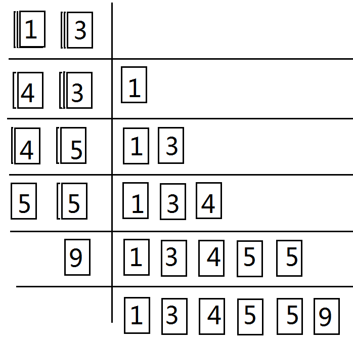
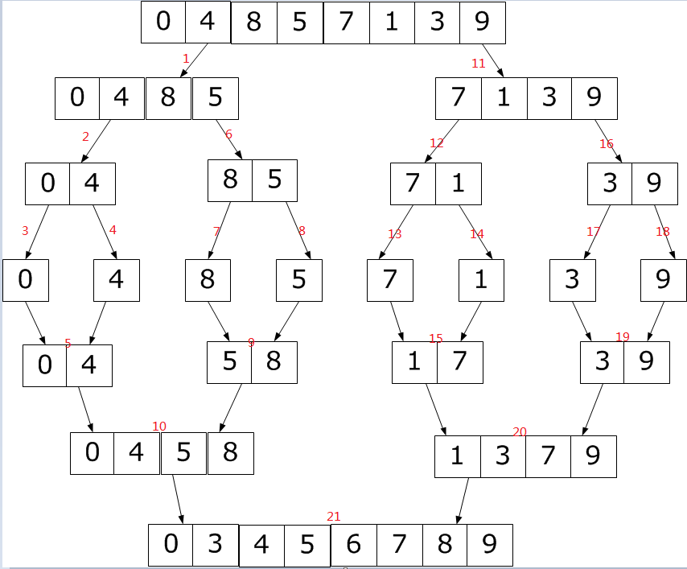

要想了解归并思想，就离不开对归并排序的理解，从前看别人的代码百思不得其解，后来看到一张图片顿时领悟，附下：

每次比较两个数组，注意可以是一个数组的两个不同的区间，每次将较小的数存储在一个临时数组中，这样就完成了归并排序。当然，前提是这两个数组是有序的，那么，问题是，如何让这两个数组是有序的呢，这就用到了递归。
merge_sort(left, mid);
merge_sort(mid+1, right);为什么要用递归来实现呢，看下一张图片。

如果只是说理论就显得苦涩难懂，下面贴一个来自洛谷的题目，小试身手。
https://www.luogu.org/problem/P1908
详细讲解已经在代码注释中标明
#include<bits/stdc++.h>
using namespace std;
int N;
int a[100000+10], temp[100000+10];
long long ans = 0; //ans用于记录逆序对的数量
void merge_sort(int l, int r)
{
if(l == r) return ;
int k = 0 ,mid = (l + r)/2;
merge_sort(l, mid);
merge_sort(mid+1, r);
//注意一定要先递归，这样就可以保证l ~ mid区间、mid + 1 ~ r区间已经完成了从小到大的排序
int i = l, j = mid + 1;
while(i <= mid && j <= r)
{
if(a[i] < a[j])
temp[k++] = a[i++]; //将较小的数字存储在临时数组中
else
{
temp[k++] = a[j++];
ans += mid - i + 1; //因为a[i]-a[mid]按递增顺序排列 所以a[j]之前有mid-i+1对逆序对
}
}
while(i <= mid) //如果a[i...mid]有剩余
temp[k++] = a[i++];
while(j <= r) //如果a[j...r]有剩余
temp[k++] = a[j++];
for(k = 0; k <= (r - l); k++)
a[l + k] = temp[k]; //这里就完成了两块区间的有序归并
}
int main()
{
std::ios::sync_with_stdio(false);
// freopen("in.txt", "r", stdin);
// freopen("out.txt", "w", stdout);
cin >> N;
memset(a, 0, sizeof(a));
memset(temp, 0, sizeof(temp));
for(int i = 0; i < N; i++)
cin >> a[i];
merge_sort(0, N-1);
cout << ans << endl;
}以上代码同样可以用于排序（采用了分治排序）